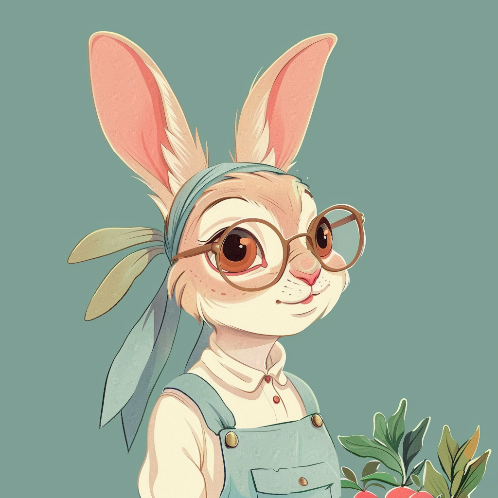

Hi, I'm Bunny Binky!

I'm Bunny, and I've been honing my gardening, planting, and farming skills for the past five years. In my front yard, I manage a small garden that features over eight different kinds of plants. Moving to the backyard, I've set up a tiny farm where I grow bok choy, carrots, sweet potatoes, and more. Indoors, I take care of a diverse collection of over 30 plants, ensuring they thrive in their environment. Not stopping there, I also offer my plant-sitting services to the community, spreading my love for plants and helping others nurture their green companions.